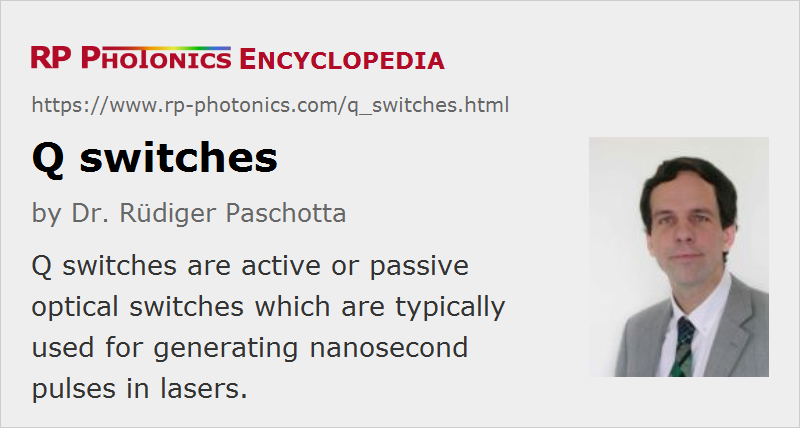

Q Switches
Definition: optical switches which are typically used for generating nanosecond pulses in lasers
More specific term: acousto-optic Q switches
German: Güteschalter
How to cite the article; suggest additional literature
Author: Dr. Rüdiger Paschotta
A Q switch is a device which can be quickly switched between states where it causes very low or rather high losses, respectively, for a laser beam sent through it. Such devices are typically used within a laser resonator with the purpose of active Q switching the laser; this is a technique for generating short intense pulses, where the pulse duration is typically in the nanosecond range. Q switches can also be used for pulse generation with cavity dumping, but the detailed requirements on the optical switch are actually somewhat different in that case.
Types of Q Switches
Acousto-optic Q Switches

The most common type is an acousto-optic modulator. The transmission losses through some crystal or glass piece are small as long as the acoustic wave is switched off, whereas strong Bragg reflection occurs with the acoustic wave switched on, so that the losses are typically of the order of 50% per pass, corresponding to 75% per double pass in a linear laser resonator. For generating the acoustic wave, an electronic driver is required with an RF power of the order of 1 W (or several watts for large-aperture devices) and a radio frequency (RF) of the order of 100 MHz.
The switching speed (or modulation bandwidth) is finally limited not by the acousto-optic transducer, but by the acoustic velocity and the beam diameter.
For more details, see the article on acousto-optic Q-switches.
Electro-optic Q Switches
For particularly high switching speeds, as required e.g. in Q-switched microchip lasers, an electro-optic modulator can be used. Here, the polarization state of light can be modified via the electro-optic effect (or Pockels effect), and this can be turned into a modulation of the losses by using a polarizer. Compared with an acousto-optic devices, much higher voltages are required (which need to be switched with nanosecond speeds), but on the other hand no radiofrequency signal.
Mechanical Q Switches
Particularly in the early days of Q-switched lasers, mechanical Q switches were often used – mostly in the form of rotating mirrors. Here, a small laser mirror is mounted on a quickly rotating device. The mirror is used as an end mirror in a linear laser resonator. A pulse builds up when the mirror is in a position where it closes the laser resonator. This approach is simple and very robust, suitable particularly for high-power lasers with relatively long pulse durations.
Passive Q Switches
Passive Q switches are saturable absorbers which are triggered by the laser light itself. Here, the losses introduced by the Q switch must be small enough to be overcome by the laser gain once sufficient energy is stored in the gain medium. The laser power then first rises relatively slowly, and once it reaches a certain level the absorber is saturated, so that the losses drop, the net gain increases, and the laser power can sharply rise to form a short pulse.
For a passively Q-switched YAG laser, a Cr4+:YAG crystal typically serves as the passive Q switch. There are other possible materials, such as various doped crystals and glasses, and semiconductor saturable absorber mirrors are particularly suitable for small pulse energies.
Key Properties
For the selection of a suitable Q switch, the following aspects have to be considered:
- the operation wavelength, which influences e.g. the required anti-reflection coating
- the open aperture
- the losses in the high-loss state (particularly for high gain lasers) and low-loss state (influencing the power efficiency)
- the switching speed (particularly for short pulse lasers)
- the damage threshold intensity
- the required RF power
- the cooling requirements
- the size of the setup (particularly for compact lasers)
Of course, the electronic driver must be selected to fit to the Q switch.
Suppliers
The RP Photonics Buyer's Guide contains 45 suppliers for Q switches. Among them:
Questions and Comments from Users
Here you can submit questions and comments. As far as they get accepted by the author, they will appear above this paragraph together with the author’s answer. The author will decide on acceptance based on certain criteria. Essentially, the issue must be of sufficiently broad interest.
Please do not enter personal data here; we would otherwise delete it soon. (See also our privacy declaration.) If you wish to receive personal feedback or consultancy from the author, please contact him e.g. via e-mail.
By submitting the information, you give your consent to the potential publication of your inputs on our website according to our rules. (If you later retract your consent, we will delete those inputs.) As your inputs are first reviewed by the author, they may be published with some delay.
See also: Q switching, Q-switched lasers, acousto-optic Q switches, electro-optic modulators, saturable absorbers, semiconductor saturable absorber mirrors, cavity dumping
and other articles in the category photonic devices
|  |
If you like this page, please share the link with your friends and colleagues, e.g. via social media: 


These sharing buttons are implemented in a privacy-friendly way! |
2020-05-16
Why do we place the Q-switch between the active medium and the partially reflecting mirror?
Answer from the author:
It is not necessary to put it there. It is in fact often placed near the highly reflecting mirror. Depending on the concrete circumstances, different positions may be ideal.